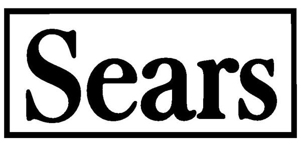
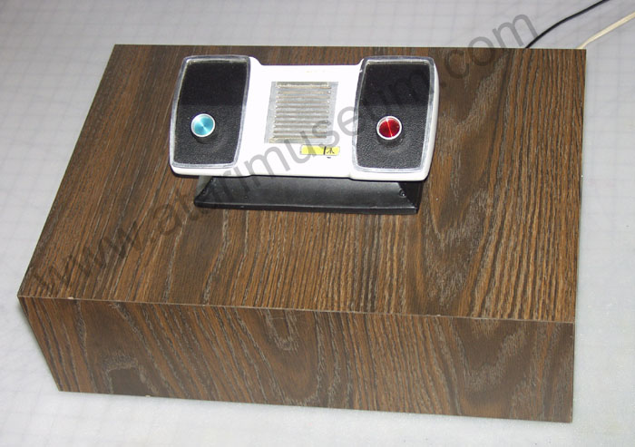
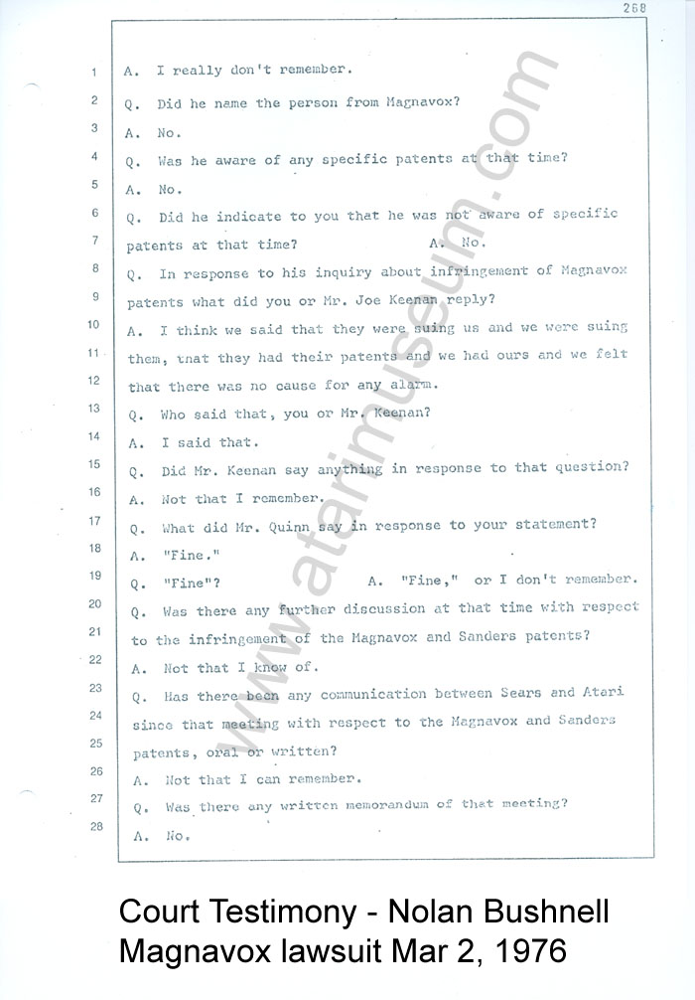

Now the product was on its way to becoming a
reality. In the meantime Atari needed to sell the darned thing. First stop, the
New York Toy Faire in January of 1975. Gene Lipkin and Al Alcorn head out to try
and get the toy buyers to pick up and sell this great new product, after all its
made by the most recognized company in the video arcade industry - Atari.
What could possibly go wrong...
One would think that buyers would've been
lining up to get a hold of this amazing new product, but this wasn't exactly the
case. Those that did express interest in a home TV game system from Atari
sat down with Al and Gene and discussed terms, conditions and capabilities. This
was a problem for Atari, it was an arcade game manufacturer and seller. Atari
had no experience in the consumer marketplace, no manufacturing capabilities and
they still weren't sure what the product was going to cost to manufacture. One
meeting really struck home with them when the buyer from Tandy Corporation, the
owner of the Radio Shack chain of stores wanted to purchase Home Pong units to
sell in its store chains. After discussing the product the Tandy buyer
said he wanted an "Anticipation Discount." Neither Al nor Gene knew what
the heck that was, when they asked about it the buyer explained - "Its a
discount in anticipation of us paying you." So then Gene responded back
"So, your saying you might not pay us?" With that they kindly declined his
offer, to much the shock of the Tandy buyer, after all this was Tandy, which was
a national chain and was considered the "McDonalds of Electronic Stores" because
they were everywhere, had large inventories of parts and were one of the biggest
sellers of the very popular CB Radio's during the 1970's. So saying no to
them, was like saying no to the Walmart of today.
Time for Al and Gene to head back to
California and rethink the product, as it really wasn't a toy and shouldn't be
sold through toy sellers so the next idea is tried. It's a device for TV's
so Gene Lipkin begins calling TV sellers, no one is interested. Finally in
a stroke of pure luck Gene talks to a man by the name of
Tom Quinn at Sears, but he's not in the TV department, he's in their Sporting
Goods Department. Quinn was what many described him as being a "maverick."
He thought outside of the box, did a lot of research and saw the potential.
What Gene, Al and Nolan didn't know when it came to retailers, especially in a
company such as Sears - you can't cold call them to sell them something.
The buyers in the departments, they watch trends, look for products that will
fit their need and buying trends and they go out and call on companies for
products. So it was a bit backwards. However this time around
instead of reaching someone who would say "no" and hang up, Gene connects with
Tom Quinn. He is very excited about this, Atari says they have the real
deal, and they can deliver it. Up to this point Tom had managed to get
Magnavox out of the deal of selling its Odyssey with its TV's. This was an
important step, but Magnavox was not delivering enough Odyssey's to meet Quinn's
sales volume. Now these Atari guys call him up and they say they can.
He's interested and it looks like there might be something to this.

So Gene Lipkin lets Al and Nolan
know they might have a possible buyer from Sears, this is great but more calls
need to be made until they can find someone who will commit and buy their
product. Well two days after the call to Sears, bright and early that
morning Gene's secretary says there is someone waiting in the lobby for him, his
name is Tom Quinn. Gene tells his secretary, no you must be mistaken, Tom Quinn
is the guy I called from Sears a few days ago. She says yes... and he's
waiting out in the lobby. So Quinn meets with Gene, Nolan and Al and discusses
his interest in Sears selling their Pong product, he will arrange for a meeting
at Sears Corporate Headquarters in Chicago at... the Sears Tower, of course.
So Nolan, Joe Keenan, Gene Lipkin and Al Alcorn set off to Chicago for the
meeting. They arrive the day before, so that night, fearing that the Home
Pong prototype Al had carried with them might be stolen, they called on an old
friend - Stevie Kauffman (who later would become an Executive at Stern in
Chicago) to keep the prototype in his apartment overnight for safe keeping.

Time for the big demonstration.
Nolan, Joe, Gene and Al are setup in the Executive Conference room at the top of
the Sears tower, a TV set is in the room for them to connect to, Al sets things
up, time to wow them with their Pong for your home TV. Power goes on
and... nothing, no screen, no display, no score, nothing. Al
Alcorn turns off the Pong prototype and turns it over and begins changing some
connections among the wires underneath in the organized chaos that only he would
understand and be able to decypher. Some quick changes to make the Home
Pong unit display on a different channel and suddenly the TV came to life!
The all too familiar Pong playfield appeared, the game played perfectly and now
it was time to talk terms. There was nothing actually wrong with the Home
Pong prototype, what the problem really was, was that they were sitting
underneath the largest and most powerful transmitting antenna's in the area,
their signal completely overpowered the tiny little built in broadcasting system
within the Home Pong circuitry that would transmit a TV signal over the wire
into the TV set. Some fast and skilled thinking on Al's part, changed the
channel setting to one that would not be occupied by a TV station signal and
suddenly the Home Pong prototype was able to get its signal through to the TV in
the conference room. This bit of difficulty is most likely what resulted
in Atari including a channel select switch on its home console and all those
that would follow, to allow the game owner to set it to an alternative channel
(3 or 4) if they found that channel didn't work with their game console.

With the demonstration past them and
Sears more interested than ever, further meetings are arranged between Atari and
Sears. One such meeting was in regarding to the Elephant in the room, in this
case - Magnavox. There was concern over Atari's product and the Magnavox product
and any legal and patent issue's that may put a stop to this new business
relationship. During the meeting, Nolan assured Tom Quinn that the Atari
product and the Magnavox product would not be an issue. The following year
when Magnavox sued Atari for Patent Infringement, Nolan Bushnell would have to
testify to this account.
(CONTINUE TO PART 2...)

{kind=link}